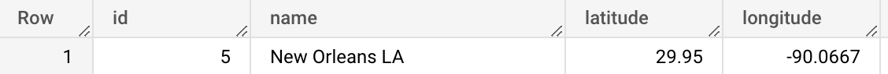
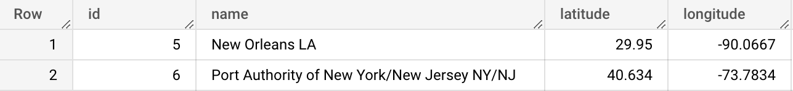
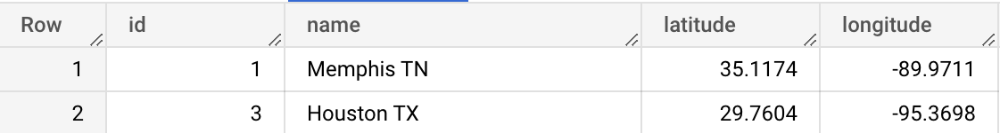
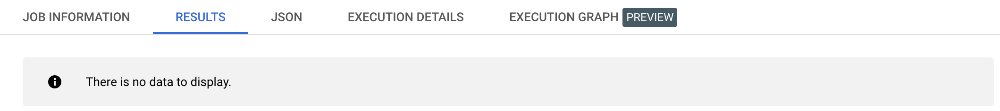
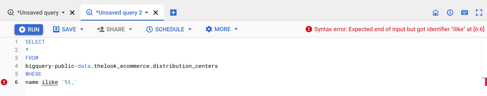
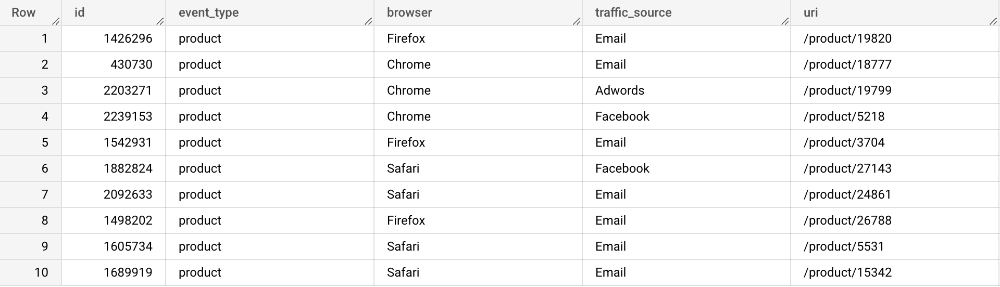
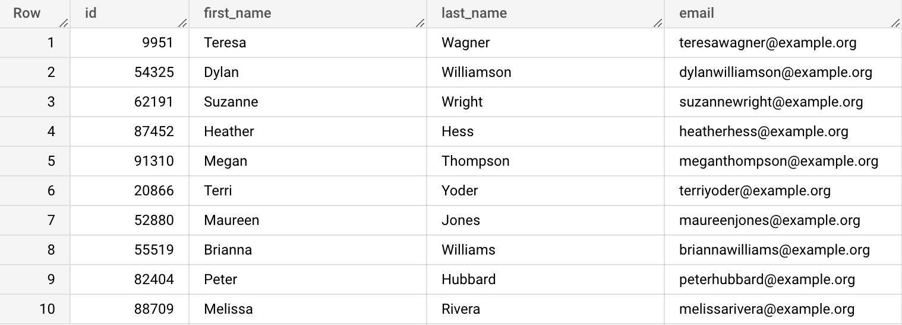
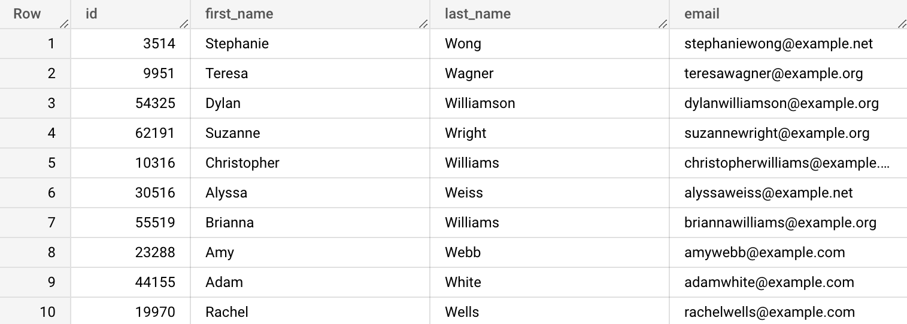

Among other operators that can be used in the WHERE clause’s condition, are LIKE and ILIKE. They are used to match a string pattern. The % symbol is used as a catch-all symbol, or wildcard. The _ symbol is used as wildcard for 1 character.
SELECT *
FROM bigquery-public-data.thelook_ecommerce.distribution_centers
WHERE name LIKE 'New%';

SELECT *
FROM bigquery-public-data.thelook_ecommerce.distribution_centers
WHERE name LIKE '%New%';

SELECT *
FROM bigquery-public-data.thelook_ecommerce.distribution_centers
WHERE name LIKE '%T_';

ILIKE is case-sensitive. So if we tweak the previous example by using ‘%t_’ instead of ‘%T_’, we get no results returned.
SELECT *
FROM bigquery-public-data.thelook_ecommerce.distribution_centers
WHERE name LIKE '%t_';

If you want to match strings in case-insensitive way, use ILIKE. Unfortunately, ILIKE is not supported by BigQuery. We’ll implement various workarounds using different cool features in the later parts of the course.

{% include practice_problems_intructions.html %}bigquery-public-data.thelook_ecommerce.events
Write a query that displays 10 events where the uri column contains ‘product’.

SELECT id,
event_type,
browser,
traffic_source,
uri
FROM bigquery-public-data.thelook_ecommerce.events
WHERE uri LIKE '%product%'
LIMIT 10;
bigquery-public-data.thelook_ecommerce.users
Write a query that displays 10 users whose email addresses ends with ‘.org’.

SELECT id, first_name, last_name, email
FROM bigquery-public-data.thelook_ecommerce.users
WHERE email LIKE '%.org'
LIMIT 10;
bigquery-public-data.thelook_ecommerce.users
Write a query that displays 10 users whose last names start with ‘W’.

SELECT id, first_name, last_name, email
FROM bigquery-public-data.thelook_ecommerce.users
WHERE last_name LIKE 'W%'
LIMIT 10;